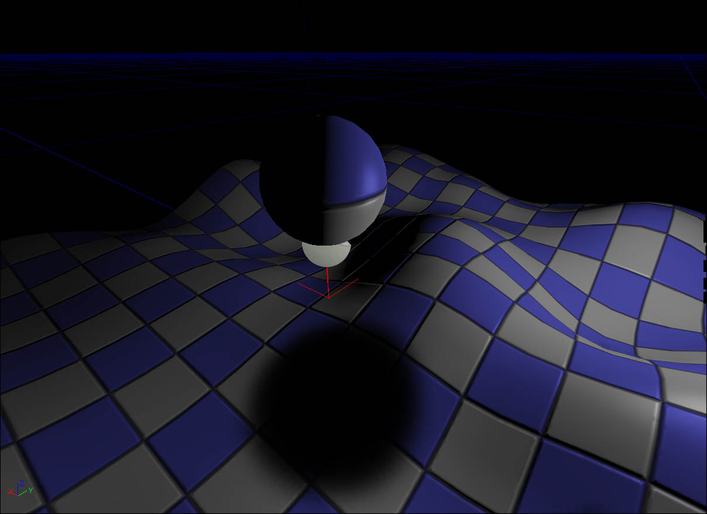
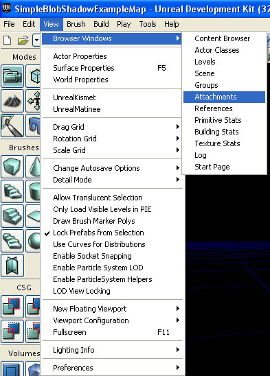
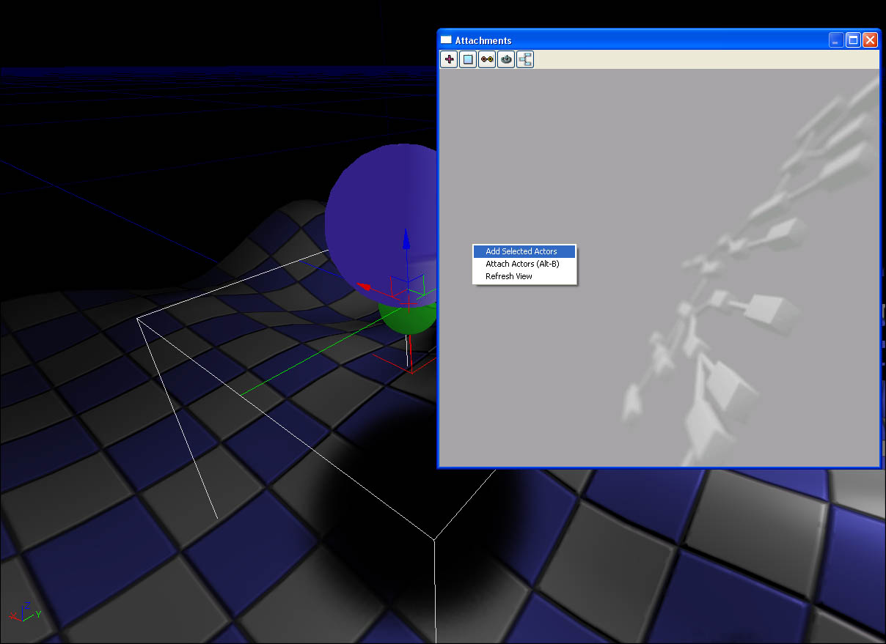
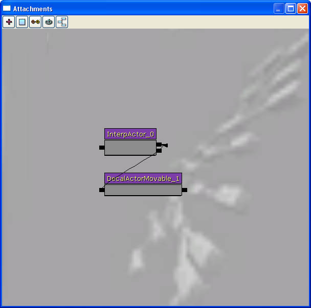

UDN
Search public documentation:
DevelopmentKitGemsCreatingASimpleBlobShadow
日本語訳
中国翻译
한국어
Interested in the Unreal Engine?
Visit the Unreal Technology site.
Looking for jobs and company info?
Check out the Epic games site.
Questions about support via UDN?
Contact the UDN Staff
中国翻译
한국어
Interested in the Unreal Engine?
Visit the Unreal Technology site.
Looking for jobs and company info?
Check out the Epic games site.
Questions about support via UDN?
Contact the UDN Staff
UE3 Home > Unreal Development Kit Gems > Creating Simple Blob Shadows
UE3 Home > Particle & Effects > Decals > Creating Simple Blob Shadows
UE3 Home > Particle & Effects > Decals > Creating Simple Blob Shadows
Creating Simple Blob Shadows
Last tested against UDK Mar, 2011
PC compatible
Overview
Decal material Layout
- Constant Clamp - This is used to ensure that the output values from all previous calculations wind up being within the 0.f and 1.f range. Modulation does still work with values outside that range, but it is not desirable in this instance.
- Add - This is used to add the opacity texture mask to the interpolated shadow color. Adding an 'inversed' mask of the shadow, will add 1.f to the areas that are not part of the shadow. Thus, when these values are clamped, they will become 1.f and will be invisible when the decal is rendered.
- 'Opacity Texture' - This defines the shadow mask. It is not necessary to use a circular shadow, thus you can create other static shadow shapes.
- Linear Interpolation - This linearly interpolates between (1, 1, 1, 1) and the 'ShadowColor'. By using the 'ShadowColor''s Alpha output you can control how light or dark the shadow is.
- Constant [1] - This is one of the parameters of the linear interpolation function. This defines the maximum lightness of the shadow, which in this case is 1.
- 'Shadow Color' - This defines the color of the shadow. It is not necessary to use a black color.
Related topics
Testing the decal material
- Select your decal material in the Content Browser
- Right click within the world viewport where you would like the decal to be placed and a context menu will appear
- Left click either "Add Movable Decal: *" or "Add Decal: *"
Related topics
Creating and modifying decal material instance
Related topics
- Material Instance Editor User Guide
- Material Instance Constants
- Instanced Time Varying Materials
- Instanced Materials
Adding the simple blob shadow to an actor
Attachment
In this example, a simple blob shadow will be attached to an interpolated actor using the attachment tool that Unreal Editor provides. Add the actors that you want to attach the Movable Decal Actor to. In this case, I've added a spherical interp actor.  Open the Attachments window. This is now located here by default, and not attached to the Content Browser like before.  Select the actors you wish to attach in the viewport, right click within the Attachments window and click "Add Selected Actors".  Click and hold on one of the small black boxes on the right hand side of InterpActor_0 (or the actor you want to attach the decal to), and drag and release on one of the small black boxes on the left hand side of the DecalActorMovable_1 (or the movable decal actor). The movable decal actor is now attached and will move with the spherical mesh. Related topics
Kismet
Related topics
Unrealscript
class DecalActorSpawnable extends DecalActorMovable;
defaultproperties
{
// bStatic and bNoDelete prevent actors from being spawned at run time.
bStatic=false
bNoDelete=false
}
class SimpleBlobShadowPawn extends UTPawn
placeable;
// The spawned simple blob shadow.
var PrivateWrite DecalActorSpawnable SimpleBlobShadowDecal;
// A reference to the archetyped simple blob shadow actor that we will be spawning.
var(Shadow) const DecalActorSpawnable SimpleBlobShadowDecalArchetype;
simulated function PostBeginPlay()
{
local MaterialInstanceConstant DecalMaterialInstanceConstant;
Super.PostBeginPlay();
// Dedicated servers do not need to spawn the simple blob shadow
if (WorldInfo.NetMode == NM_DedicatedServer)
{
return;
}
// No blob shadow archetype
// The archetype was not the correct class type
if (SimpleBlobShadowDecalArchetype == None)
{
return;
}
// Spawn the simple blob shadow actor
SimpleBlobShadowDecal = Spawn(SimpleBlobShadowDecalArchetype.Class, Self,, Location, Rot(49152, 0, 0), SimpleBlobShadowDecalArchetype);
if (SimpleBlobShadowDecal != None)
{
if (SimpleBlobShadowDecal.Decal != None && SimpleBlobShadowDecal.Decal.GetDecalMaterial() != None)
{
// Create a new material instance so that we can alter the parameters dynamically
DecalMaterialInstanceConstant = new class'MaterialInstanceConstant';
if (DecalMaterialInstanceConstant != None)
{
DecalMaterialInstanceConstant.SetParent(SimpleBlobShadowDecal.Decal.GetDecalMaterial());
SimpleBlobShadowDecal.Decal.SetDecalMaterial(DecalMaterialInstanceConstant);
}
}
// Attach the simple blob shadow to myself
Attach(SimpleBlobShadowDecal);
}
}
defaultproperties
{
}
- PostBeginPlay is executed when Actors (which UTPawn is a subclass of) are first spawned.
- Abort if this actor is on a dedicated server. Dedicated servers don't need to spawn blob shadows.
- Abort if no shadow archetypes have been set.
- Spawn an instance of the archetype, facing down. Assign the instance to a variable so we can keep track of it.
- Check that the decal component has a decal material.
- If it is does, then create a new material instance and assign its parent to the current decal material. This will allow us to alter the properties without affecting anything else.
- Attach the spawned archetype to myself (SimpleBlobShadowPawn)